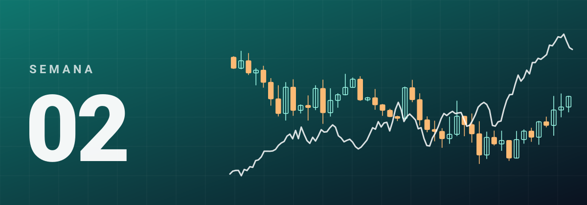
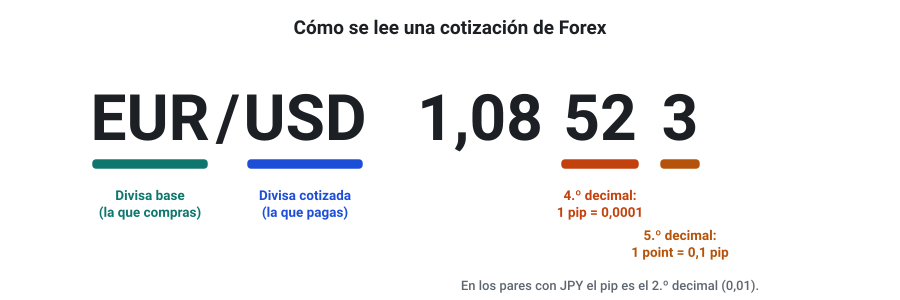
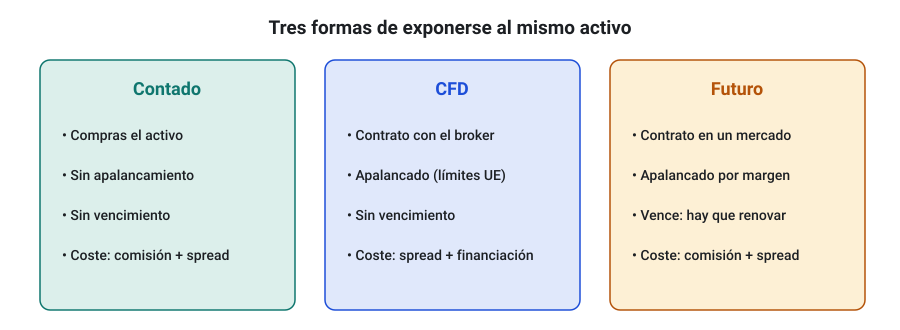
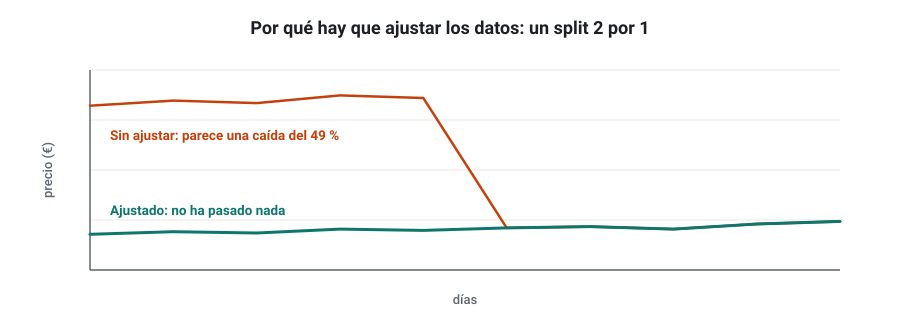
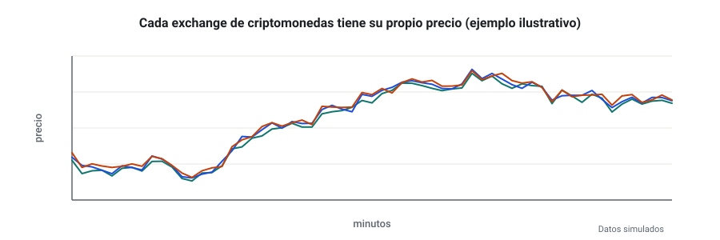
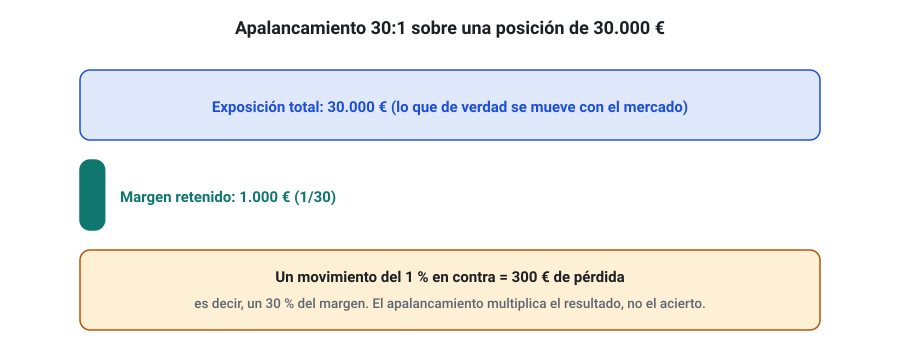
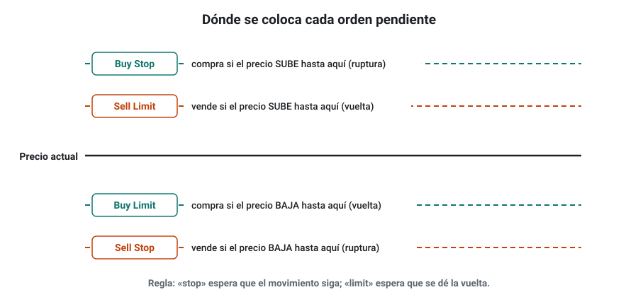
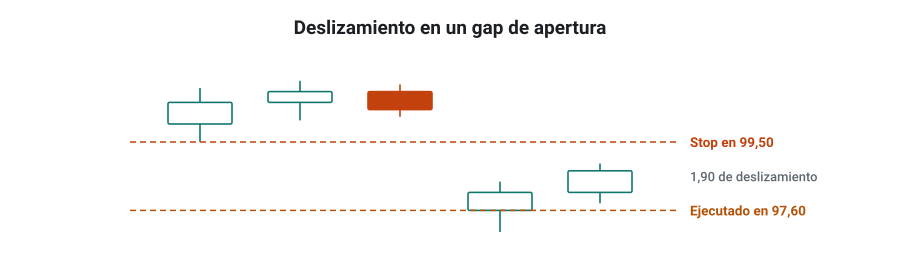

SEMANA 02 · ETAPA 1 · FUNDAMENTOS
Cuatro mercados, órdenes y operativa
Presentación de la semana
La semana pasada viste cómo funciona un mercado. Esta semana conocerás los cuatro mercados del curso, los instrumentos con los que se operan y las órdenes que usarás en todos tus algoritmos. Terminarás lanzando tus primeras órdenes en cuentas demo, sin arriesgar dinero.
Objetivos
Al terminar la semana sabrás:
- Calcular pips, lotes y el valor del pip en Forex.
- Explicar qué es un índice y en qué se diferencian sus futuros y sus CFD.
- Describir cómo afectan los dividendos y los splits a los datos de una acción.
- Explicar los riesgos propios de las criptomonedas: exchanges, custodia y volatilidad.
- Distinguir contado, CFD y futuros, y calcular margen y apalancamiento.
- Elegir el tipo de orden adecuado para cada situación.
- Abrir cuentas demo en MT4 y MT5, lanzar órdenes y leer su historial.
Plan de la semana (22–25 horas)
| Bloque | Horas | Qué harás |
|---|---|---|
| Clases | 6 | Siete lecciones: lectura y vídeos |
| Prácticas | 12 | Taller de MT4 y MT5, ejercicios y ficha del broker |
| Investigación y evaluación | 4 | Investigación I-02, entrega y examen |
| Revisión y planificación | 2 | Glosario, cuaderno y plan de la semana 3 |
Qué necesitas
- MetaTrader 4 y MetaTrader 5 instalados, o la posibilidad de instalarlos.
- Una cuenta demo en un broker autorizado que ofrezca ambas plataformas (lección S02-L7).
- Tu hoja de cálculo y tu cuaderno de investigación.
No necesitas StrategyQuant X todavía.
Criterio para desbloquear la semana 3
Tener en estado APROBADO, con un 80 % o más cada uno:
- ☐ Examen de la semana 2
- ☐ Entrega práctica: órdenes en demo y ficha del broker
- ☐ Investigación I-02: pasos 1 a 3, 7 y 8 documentados
Advertencia de riesgo. Esta semana trabajas solo en cuentas demo. No deposites dinero real en ningún broker por este curso. Los productos apalancados como los CFD conllevan un riesgo alto de perder dinero con rapidez.
Forex: pares, pips, lotes, sesiones y costes
Formato: clase de 40 minutos · Lectura: 40 minutos
Forex (foreign exchange) es el mercado de divisas y el mercado principal de especialización a corto plazo de este curso.
Los pares de divisas
Las divisas se cotizan por pares. En EUR/USD = 1,0850, la primera divisa es la base (EUR) y la segunda la cotizada (USD): un euro vale 1,0850 dólares.
- Comprar (ir largo) EUR/USD es comprar euros y vender dólares: ganas si el euro sube.
- Vender (ir corto) es lo contrario: ganas si el euro baja.
En Forex puedes ir corto tan fácilmente como largo, y los algoritmos lo aprovechan.
| Familia | Ejemplos | Características |
|---|---|---|
| Principales (majors) | EUR/USD, GBP/USD, USD/JPY, USD/CHF, USD/CAD, AUD/USD, NZD/USD | Máxima liquidez, spreads más bajos |
| Cruces | EUR/GBP, EUR/JPY, GBP/JPY | Sin dólar; spreads algo mayores |
| Exóticos | USD/TRY, USD/MXN | Spreads altos y saltos bruscos; evítalos al empezar |
Los tres pares principales del curso son EUR/USD, GBP/USD y USD/JPY.
Pips y points
El pip es la unidad estándar de movimiento:

- 0,0001 en la mayoría de los pares (EUR/USD de 1,0850 a 1,0851 = 1 pip).
- 0,01 en los pares con yen (USD/JPY de 150,10 a 150,11 = 1 pip).
Los brokers muestran un decimal más: la fracción de pip. En MetaTrader, la unidad mínima se llama point. En un broker de cinco decimales, 1 pip = 10 points.
Error típico. Confundir pips y points al poner un stop: lo pondrías diez veces más cerca o más lejos de lo que querías.
Lotes y valor del pip
| Lote | Unidades de la divisa base | Valor del pip en EUR/USD |
|---|---|---|
| Estándar (1,00) | 100.000 | 10 USD |
| Mini (0,10) | 10.000 | 1 USD |
| Micro (0,01) | 1.000 | 0,10 USD |
Ejemplo con una cuenta en euros y el EUR/USD a 1,0850: el pip de un lote vale 0,0001 × 100.000 = 10 USD, que son 10 / 1,0850 = 9,22 €.
Con el capital orientativo del curso (500–1.000 €) operarás en microlotes: el pip de 0,01 lotes vale unos 0,09 €.
Las sesiones
Forex abre del domingo por la noche al viernes por la noche. La actividad se reparte en tres sesiones (hora peninsular, orientativa):
| Sesión | Horario aproximado | Qué esperar |
|---|---|---|
| Asia (Sídney y Tokio) | 23:00 – 10:00 | Rangos estrechos; más movimiento en JPY, AUD y NZD |
| Europa (Londres) | 09:00 – 18:00 | Más volumen y rupturas |
| América (Nueva York) | 14:00 – 23:00 | Datos de EE. UU.; de 14:00 a 18:00 se solapa con Londres |
Europa y EE. UU. cambian la hora en fechas distintas: durante unas semanas al año la diferencia es de cinco horas en vez de seis.
Los costes
- Spread: se estrecha en Londres y Nueva York y se dispara en Asia, en el cambio de día y en las noticias.
- Comisión: en cuentas raw o ECN pagas un spread casi nulo más una comisión por lote.
- Swap: interés que pagas o cobras por mantener una posición de un día a otro. Suele triplicarse el miércoles para cubrir el fin de semana.
- Deslizamiento: diferencia entre el precio pedido y el obtenido.
Comprueba que lo has entendido
- Si compras GBP/USD, ¿qué divisa compras y cuál vendes?
- El USD/JPY pasa de 150,25 a 150,40. ¿Cuántos pips se ha movido?
- ¿Cuánto vale un pip de 0,05 lotes de EUR/USD en dólares?
Índices: composición, futuros y CFD
Formato: clase de 30 minutos · Lectura: 30 minutos
Un índice bursátil es un número que resume el precio de un grupo de acciones. No se compra directamente: se opera con productos que lo replican.
Los índices del curso
| Índice | Qué agrupa | Cómo se pondera | Horario de su bolsa (hora peninsular) |
|---|---|---|---|
| S&P 500 | 500 grandes empresas de EE. UU. | Por capitalización | 15:30–22:00 |
| Nasdaq 100 | 100 grandes empresas no financieras del Nasdaq, con mucho peso tecnológico | Por capitalización, con límites | 15:30–22:00 |
| DAX 40 | 40 grandes empresas alemanas | Por capitalización | 9:00–17:30 |
Ponderar por capitalización significa que las empresas más grandes pesan más. Unas pocas empresas muy grandes pueden mover todo el índice.
El DAX es un índice de rentabilidad total: incluye los dividendos reinvertidos. El S&P 500 y el Nasdaq 100, en su versión habitual, solo reflejan precios. Importa al comparar resultados a largo plazo.
Cómo se operan: futuros y CFD
| Aspecto | Futuro | CFD sobre índice |
|---|---|---|
| Dónde se negocia | En un mercado organizado (CME en EE. UU., Eurex en Europa) | Con tu broker, fuera de bolsa (OTC) |
| Tamaño | Fijo por contrato, con un valor por punto | Flexible: puedes operar fracciones |
| Vencimiento | Sí: suelen vencer cada trimestre y hay que renovar (rollover) | Normalmente no; el broker cobra o paga financiación diaria |
| Precio | El del mercado central, igual para todos | El que da tu broker, basado en el futuro o el contado |
| Capital necesario | Alto para contratos estándar; menor en micros | Bajo |

Ejemplos de tamaño por punto, para hacerte una idea:
| Contrato | Valor de un punto |
|---|---|
| E-mini S&P 500 | 50 $ |
| Micro E-mini S&P 500 | 5 $ |
| E-mini Nasdaq-100 | 20 $ |
| Micro E-mini Nasdaq-100 | 2 $ |
| Futuro DAX (FDAX) | 25 € |
| Mini-DAX | 5 € |
| Micro-DAX | 1 € |
Las especificaciones las fija cada mercado y pueden cambiar: compruébalas siempre en la web del exchange antes de usarlas.
Por qué importa para un algoritmo
- Huecos de apertura. Aunque el futuro cotiza casi 24 horas, la volatilidad se concentra en el horario de la bolsa. Las aperturas de 9:00 (DAX) y 15:30 (EE. UU.) son momentos clave.
- Rollovers. Los datos históricos de futuros deben unir contratos sucesivos. Si se unen mal, aparecen saltos falsos (semana 9).
- Diferencias entre CFD. Dos brokers pueden construir su CFD del DAX de forma distinta. Tus datos deben corresponder al producto que operarás.
Comprueba que lo has entendido
- ¿Por qué unas pocas empresas pueden mover todo el S&P 500?
- Nombra dos diferencias entre un futuro y un CFD sobre el mismo índice.
- El Micro E-mini S&P 500 sube 12 puntos. ¿Cuánto ganas con un contrato?
Acciones: dividendos, ajustes corporativos y universos
Formato: clase de 30 minutos · Lectura: 30 minutos
Una acción es una parte de la propiedad de una empresa. En el curso, las acciones son el mercado de especialización a medio y largo plazo: estrategias que mantienen posiciones durante semanas o meses y reparten el riesgo entre muchas empresas.
Qué mueve el precio de una acción
- Resultados de la empresa: beneficios, ventas y previsiones, publicados cada trimestre.
- El mercado en general: cuando cae el índice, la mayoría de las acciones caen con él.
- El sector: las empresas de un mismo sector suelen moverse juntas.
- Noticias concretas: compras, fusiones, cambios de directivos o problemas legales.
Por eso una estrategia de acciones casi nunca opera una sola empresa: trabaja con un universo, una lista de empresas de las que elige las que cumplen sus reglas.
Los universos
Un universo es el conjunto de acciones entre las que una estrategia puede elegir. Ejemplos: las empresas del S&P 500, las del DAX o las de una bolsa con un volumen mínimo diario. Elegir bien el universo es tan importante como las reglas: un universo de empresas pequeñas y poco líquidas tendrá costes y deslizamientos mucho mayores.
Dividendos
Un dividendo es una parte del beneficio que la empresa reparte a sus accionistas. El día en que la acción deja de dar derecho al dividendo (fecha ex-dividendo), su precio suele caer aproximadamente en el importe repartido.
Esa caída no es una pérdida real: el accionista recibe el dividendo. Pero en un gráfico sin ajustar parece una bajada, y un algoritmo podría tomarla por una señal.
Si operas con CFD sobre acciones, el broker te abona el dividendo si estás largo y te lo cobra si estás corto.
Splits y otros ajustes
En un split (desdoblamiento), la empresa divide cada acción en varias. En un split 4 por 1, quien tenía una acción de 400 $ pasa a tener cuatro de 100 $. El valor total no cambia, pero el gráfico muestra una caída del 75 % que no ocurrió.

| Dato | Sin ajustar | Ajustado |
|---|---|---|
| Precio antes de un split 4×1 | 400 $ | 100 $ |
| Precio después | 100 $ | 100 $ |
| Lo que ve el algoritmo | Una caída del 75 % | Ningún salto |
Por eso los datos de acciones para backtesting deben estar ajustados por dividendos y splits. Lo estudiarás a fondo en la semana 9.
El sesgo de supervivencia
Si pruebas una estrategia sobre las empresas que hoy forman el S&P 500, estás usando solo las que sobrevivieron y crecieron. Las que quebraron o salieron del índice no aparecen. El resultado del backtest sale mejor de lo que habría sido en realidad. A esto se le llama sesgo de supervivencia (survivorship bias).
Comprueba que lo has entendido
- ¿Por qué una estrategia de acciones suele trabajar con un universo y no con una sola empresa?
- Una acción de 90 € reparte 2 € de dividendo. ¿A qué precio aproximado abrirá el día ex-dividendo si nada más cambia?
- Explica con tus palabras por qué el sesgo de supervivencia hace que un backtest parezca mejor.
Criptomonedas: mercado 24/7, exchanges, custodia y riesgos
Formato: clase de 30 minutos · Lectura: 30 minutos
Una criptomoneda es una unidad digital registrada en una red informática compartida (blockchain). En el curso es un mercado de investigación especializada: lo estudiarás, pero con más cautelas que los demás.
Las más líquidas
- Bitcoin (BTC): la primera y la de mayor valor total.
- Ethereum (ETH): la segunda, base de muchas otras aplicaciones.
- Otras con mucho volumen cambian con el tiempo: comprueba el volumen antes de investigar cualquiera.
Muchas criptomonedas tienen poco volumen real. En ellas los precios saltan y los costes son altos.
Un mercado que no cierra
Las criptomonedas cotizan 24 horas, 7 días a la semana. Consecuencias para un algoritmo:
- No hay huecos de fin de semana en el exchange, pero sí pueden aparecer en los CFD de un broker que cierra el sábado.
- La liquidez cambia mucho entre horas laborables y fines de semana.
- El concepto de vela diaria depende de la hora elegida para cerrarla. Cada fuente puede usar una distinta.
Dónde se operan
| Forma | Qué tienes | Riesgos principales |
|---|---|---|
| Comprar en un exchange | La criptomoneda real, custodiada por el exchange o por ti | Quiebra o hackeo del exchange; pérdida de tus claves |
| CFD con un broker | Un contrato sobre el precio, sin poseer la criptomoneda | Apalancamiento; precios y costes del broker |
| Futuros regulados (por ejemplo, en CME) | Un contrato estandarizado | Tamaños grandes; vencimientos |
Custodia significa quién guarda la criptomoneda. Si la deja en un exchange y este quiebra, puedes perderla, como les ocurrió a muchos clientes de FTX en 2022.
Cada exchange tiene su precio
No hay un precio único de Bitcoin: cada exchange tiene el suyo, y pueden diferir ligeramente. Para un algoritmo, los datos deben ser del mismo exchange o del mismo broker en el que operará.

Regulación
En la Unión Europea, el Reglamento MiCA regula a los proveedores de servicios de criptoactivos y les exige autorización. En España, la autoridad competente es la CNMV. Comprueba siempre que la plataforma está autorizada en tu país.
Para los CFD sobre criptomonedas, el apalancamiento máximo para minoristas en la UE es 2:1: un 50 % de margen.
Riesgos específicos
- Volatilidad muy alta: movimientos del 5 % o 10 % en un día no son raros.
- Caídas bruscas con poca liquidez.
- Riesgo del intermediario: quiebras, hackeos y fraudes.
- Errores irreversibles al enviar criptomonedas a una dirección equivocada.
Comprueba que lo has entendido
- ¿Qué diferencia hay entre comprar Bitcoin en un exchange y operar un CFD sobre Bitcoin?
- ¿Por qué los datos de un algoritmo de criptomonedas deben venir del mismo exchange en el que opera?
- ¿Qué es la custodia y por qué es un riesgo?
Instrumentos: contado, CFD y futuros; apalancamiento y margen
Formato: clase de 40 minutos · Lectura: 40 minutos
El mismo mercado se puede operar con instrumentos distintos. Elegir el instrumento cambia los costes, el riesgo y los datos que necesitarás.
Los tres instrumentos
| Instrumento | Qué tienes | Ejemplo | Ventaja | Inconveniente |
|---|---|---|---|---|
| Contado (spot) | El activo real | Comprar acciones o Bitcoin y guardarlos | Sencillo, sin vencimiento | Hace falta todo el capital; ir corto es difícil |
| CFD (contrato por diferencias) | Un contrato con el broker por la diferencia de precio | CFD sobre EUR/USD o sobre el DAX | Tamaños pequeños, largo y corto, apalancamiento | Contraparte el broker; costes de financiación; alto riesgo |
| Futuro | Un contrato estandarizado en un mercado organizado | Micro E-mini S&P 500 | Precio transparente y central | Tamaños mayores; vencimientos |
En Forex minorista en la UE, lo que operas casi siempre es un CFD sobre la divisa: no recibes dólares, sino la diferencia de precio entre la apertura y el cierre.
Apalancamiento y margen
El apalancamiento te permite abrir posiciones mayores que tu dinero. El broker bloquea una parte como garantía: el margen.

Ejemplo: 0,10 lotes de EUR/USD equivalen a 10.000 €. Con apalancamiento 30:1, el broker bloquea 10.000 / 30 = 333,33 €.
Los límites para minoristas en la UE
| Subyacente | Apalancamiento máximo | Margen mínimo |
|---|---|---|
| Pares formados solo por USD, EUR, JPY, GBP, CAD o CHF | 30:1 | 3,33 % |
| Resto de pares, oro e índices principales | 20:1 | 5 % |
| Materias primas (salvo oro) e índices no principales | 10:1 | 10 % |
| Acciones individuales | 5:1 | 20 % |
| Criptomonedas | 2:1 | 50 % |
Además, el broker debe cerrar tus posiciones si tus fondos caen por debajo del 50 % del margen exigido, y no puedes perder más de lo que tienes en la cuenta (ESMA).
El apalancamiento no es tu riesgo
El riesgo de una operación depende del tamaño de la posición y de la distancia al stop, no del apalancamiento disponible. Con el mismo 30:1 puedes arriesgar un 0,5 % o un 50 % de tu cuenta. En la semana 4 aprenderás a calcular el tamaño correcto.
Un ejemplo de por qué importa: con una cuenta de 500 €, una posición de 1 lote de EUR/USD (unos 100.000 €) exige unos 3.333 € de margen. No podrías abrirla. Pero con 0,10 lotes sí: bloquea 333 € y cada pip vale unos 0,92 €. Un movimiento de 100 pips en contra serían unos 92 €, casi un 20 % de tu cuenta.
Comprueba que lo has entendido
- ¿Qué diferencia hay entre tener acciones al contado y tener un CFD sobre esas acciones?
- Calcula el margen de 0,20 lotes de GBP/USD (valor 20.000 £) con apalancamiento 30:1.
- ¿Por qué el apalancamiento disponible no es lo mismo que el riesgo que asumes?
Tipos de órdenes
Formato: clase de 35 minutos · Lectura: 35 minutos
Un algoritmo no hace nada más que lanzar, modificar y cancelar órdenes. Elegir mal el tipo de orden puede convertir una buena idea en una estrategia perdedora.
Órdenes de entrada
| Orden | Qué dice | Se ejecuta cuando… | Para qué se usa |
|---|---|---|---|
| A mercado (market) | Compra o vende ya | Al instante, al mejor precio disponible | Entrar sin esperar |
| Compra límite (buy limit) | Compra si el precio baja hasta X | El ask llega a X o menos | Comprar más barato: reversión a la media |
| Venta límite (sell limit) | Vende si el precio sube hasta X | El bid llega a X o más | Vender más caro |
| Compra stop (buy stop) | Compra si el precio sube hasta X | El ask llega a X o más | Entrar en rupturas al alza |
| Venta stop (sell stop) | Vende si el precio baja hasta X | El bid llega a X o menos | Entrar en rupturas a la baja |

Una forma de recordarlo: las órdenes límite esperan un precio mejor; las stop esperan a que el precio confirme un movimiento.
Órdenes de salida
- Stop loss (SL): cierra la posición si el precio va en tu contra hasta X. Limita la pérdida.
- Take profit (TP): cierra la posición si el precio llega a tu objetivo.
- Trailing stop: un stop loss que se mueve a tu favor cuando el precio avanza, y se queda quieto cuando retrocede.
Toda posición de un algoritmo del curso llevará stop loss.
Lo que una orden no garantiza
- Una orden stop se convierte en orden a mercado al tocar su precio. En un gap o una noticia, puede ejecutarse bastante más lejos. Lo viste en la semana 1.
- Una orden límite garantiza el precio, pero no la ejecución: si el precio llega justo a tu nivel y se da la vuelta, quizá no se ejecute.

Validez de las órdenes
Las órdenes pendientes pueden ser válidas hasta que las canceles o hasta una fecha y hora. Los algoritmos de ruptura suelen poner caducidad: por ejemplo, la orden solo vale durante la sesión de Londres.
Diferencias entre MT4 y MT5
| Aspecto | MetaTrader 4 | MetaTrader 5 |
|---|---|---|
| Órdenes pendientes | Buy/Sell Limit y Buy/Sell Stop | Las mismas, más Buy/Sell Stop Limit |
| Posiciones por símbolo | Varias, independientes | Depende de la cuenta: hedging (varias) o netting (una sola neta) |
| Probador de estrategias | Un solo hilo, ticks simulados | Varios núcleos y ticks reales del broker |
| Lenguaje | MQL4 | MQL5 |
| Situación | Fase final; algunos brokers ya fijan cierre | Plataforma actual |
Para operar varios algoritmos en el mismo par con MT5, usarás cuentas de tipo hedging.
Comprueba que lo has entendido
- El EUR/USD cotiza a 1,0850 y quieres comprar si rompe 1,0900. ¿Qué orden usas?
- Quieres comprar si el precio cae a 1,0800. ¿Qué orden usas?
- ¿Por qué un stop loss no garantiza el precio de salida?
Taller: cuentas demo en MT4 y MT5 y primeras órdenes
Formato: taller de 90 minutos · Práctica guiada
Vas a lanzar tus primeras órdenes, siempre en cuentas demo: dinero ficticio, precios reales. Los nombres de los menús pueden variar un poco según la versión y el idioma de tu MetaTrader.
Paso 1 · Elige un broker y abre las demos
- Elige un broker que ofrezca MT4 y MT5 y que esté autorizado en tu país. Compruébalo en el registro del supervisor, como en la semana 1.
- Abre una cuenta demo en MT4 y otra en MT5 desde la web del broker o desde el menú Archivo → Abrir una cuenta de cada plataforma.
- En MT5, si te lo pregunta, elige una cuenta de tipo hedging.
- Usa un saldo parecido al capital orientativo del curso, por ejemplo 1.000 €, y la divisa EUR.
- Anota el nombre del servidor de cada demo.
Seguridad: nunca compartas la contraseña de una cuenta, tampoco la de la demo. Si alguna vez necesitas enseñar una cuenta a otra persona, se usa la contraseña de inversor, que es de solo lectura.
Paso 2 · Reúne los datos del símbolo
- Abre la ventana Observación de mercado (Ctrl + M).
- Haz clic derecho sobre EURUSD y elige Especificación.
- Anota: dígitos, tamaño del contrato, nivel mínimo de stops, swap largo y swap corto.
- Haz lo mismo con USDJPY y con un índice o una acción si el broker los ofrece.
- Anota la hora del servidor y calcula su diferencia con tu hora local.
Paso 3 · Lanza las cinco órdenes en cada plataforma
Hazlo con 0,01 lotes de EUR/USD:
| Orden | Cómo plantearla |
|---|---|
| 1. Compra a mercado con SL y TP | Stop loss a 20 pips y take profit a 40 pips de la entrada |
| 2. Compra límite | 20 pips por debajo del precio actual |
| 3. Venta stop | 20 pips por debajo del precio actual |
| 4. Modificar | Cambia el stop loss de la orden 1 a 15 pips |
| 5. Cerrar y cancelar | Cierra la orden 1 y cancela las pendientes que no se hayan ejecutado |
Para abrir una orden, usa Nueva orden (tecla F9). Antes de confirmar cada una, anota el bid, el ask y el spread que ves.
Paso 4 · Exporta el historial
- Abre la ventana de cuentas: Terminal en MT4 o Caja de herramientas en MT5 (Ctrl + T).
- Ve a la pestaña del historial, haz clic derecho y guárdalo como informe.
- Guarda los dos informes en tu carpeta de la semana 2.
Paso 5 · Compara
Anota en tu cuaderno qué diferencias has visto entre MT4 y MT5: en los menús, en los tipos de orden y en el historial. Si algo no funcionó como se describe aquí, anótalo también en tu registro de piloto.
Comprueba que lo has entendido
- ¿Por qué se usa la contraseña de inversor para enseñar una cuenta?
- ¿Qué orden pendiente usaste para entrar si el precio cae, y cuál para entrar si rompe a la baja?
- ¿Qué diferencia encontraste entre las cuentas de MT4 y MT5?
Glosario de la semana
| Término | Inglés | Definición |
|---|---|---|
| Apalancamiento | Leverage | Relación entre el tamaño de la posición y el margen que bloquea el broker |
| Capitalización | Market capitalization | Valor total de las acciones de una empresa en bolsa |
| CFD | Contract for difference | Contrato con el broker por la diferencia de precio de un activo, sin poseerlo |
| Contado | Spot | Compra o venta del activo real con entrega inmediata |
| Cruce | Cross | Par de divisas sin dólar, como EUR/GBP |
| Cuenta demo | Demo account | Cuenta con dinero ficticio y precios reales para practicar |
| Cuenta hedging | Hedging account | Cuenta de MT5 que permite varias posiciones independientes en el mismo símbolo |
| Cuenta netting | Netting account | Cuenta de MT5 con una sola posición neta por símbolo |
| Custodia | Custody | Quién guarda los activos, por ejemplo las criptomonedas |
| Divisa base y cotizada | Base and quote currency | Primera y segunda divisa de un par |
| Dividendo | Dividend | Parte del beneficio que una empresa reparte a sus accionistas |
| Ex-dividendo | Ex-dividend | Fecha desde la que la acción ya no da derecho al dividendo |
| Futuro | Future | Contrato estandarizado para comprar o vender un activo en una fecha futura |
| Ir largo / ir corto | Go long / go short | Comprar para ganar si sube / vender para ganar si baja |
| Lote | Lot | Unidad de tamaño; un lote estándar de Forex son 100.000 unidades |
| Margen | Margin | Garantía que el broker bloquea para mantener una posición |
| Orden límite | Limit order | Orden que espera un precio mejor que el actual |
| Orden stop | Stop order | Orden que se activa cuando el precio confirma un movimiento |
| Pip | Pip | Unidad estándar de movimiento: 0,0001, o 0,01 en pares con yen |
| Point | Point | Unidad mínima de precio en MetaTrader; en brokers de cinco decimales, una décima de pip |
| Rollover | Rollover | Paso de un contrato de futuros que vence al siguiente |
| Sesgo de supervivencia | Survivorship bias | Error de usar solo los activos que siguen existiendo hoy |
| Split | Stock split | División de cada acción en varias sin cambiar el valor total |
| Stop loss | Stop loss | Orden que cierra la posición para limitar la pérdida |
| Swap | Swap | Interés que se paga o cobra por mantener una posición de un día a otro |
| Take profit | Take profit | Orden que cierra la posición al alcanzar el objetivo |
| Trailing stop | Trailing stop | Stop loss que se mueve a favor cuando el precio avanza |
| Universo | Universe | Conjunto de activos entre los que una estrategia puede elegir |
Ejercicios obligatorios
Resuélvelos en tu hoja de cálculo o en tu cuaderno, mostrando los cálculos. Se entregan con la práctica de la semana.
E1 · Pips. ¿Cuántos pips se mueve el precio en cada caso? a) EUR/USD de 1,08420 a 1,08765. b) USD/JPY de 149,820 a 150,455.
E2 · Valor del pip. Tu cuenta está en euros y el EUR/USD cotiza a 1,0800. Calcula el valor de un pip de 0,03 lotes de EUR/USD en dólares y en euros.
E3 · Pip con yenes. Calcula el valor de un pip de 0,10 lotes de USD/JPY en yenes, en dólares (con el USD/JPY a 150,00) y en euros (con el EUR/USD a 1,0800).
E4 · Margen. Con los límites europeos para minoristas, calcula el margen que bloquea cada posición:
- 0,05 lotes de EUR/USD (valor: 5.000 €).
- Un CFD sobre el DAX de 1 € por punto, con el índice a 24.000 puntos.
- Un CFD sobre 0,01 BTC, con el Bitcoin a 90.000 €.
E5 · ¿Qué orden usarías? El EUR/USD está a 1,0850. Elige el tipo de orden para cada caso y explica por qué:
- Quieres comprar si el precio supera 1,0900.
- Quieres comprar si el precio baja a 1,0800.
- Quieres vender si el precio sube a 1,0920.
- Quieres vender si el precio cae por debajo de 1,0790.
- Quieres limitar la pérdida de una compra abierta a 1,0850 a 25 pips.
E6 · El riesgo real. Tienes 1.000 € y abres 0,10 lotes de EUR/USD (con el EUR/USD a 1,0800). El precio se mueve 100 pips en tu contra. ¿Cuánto pierdes en euros y qué porcentaje de tu cuenta es?
E7 · Ajustes de acciones. a) Una acción cotiza a 120 € y hace un split 3 por 1. ¿A qué precio quedará y cuántas acciones tendrá quien tenía 10? b) Otra acción de 60 € reparte un dividendo de 1,50 €. ¿A qué precio aproximado abrirá el día ex-dividendo?
E8 · Futuros. a) El Mini-DAX (5 € por punto) sube 80 puntos. ¿Cuánto gana un contrato comprado? b) El Micro E-mini Nasdaq-100 (2 $ por punto) baja 150 puntos. ¿Cuánto gana o pierde un contrato comprado?
E9 · Swap. Mantienes una compra de 0,20 lotes de un par con un swap largo de −6,50 $ por lote y noche. La abres el lunes y la cierras el viernes antes del cierre, así que pasa las noches del lunes, martes, miércoles y jueves. El swap del miércoles es triple. ¿Cuánto pagas en total?
E10 · Cripto y custodia. En un máximo de 150 palabras: explica qué riesgos tienes si compras Bitcoin y lo dejas en un exchange, y qué cambia si en lugar de eso operas un CFD sobre Bitcoin con un broker.
Investigación I-02 y entrega práctica
Investigación I-02 · ¿Cuánto cuesta realmente operar?
Esta semana practicas los pasos 1, 2, 3, 7 y 8 del ciclo: añades la comparación.
Paso 1 · Hipótesis. Elige un activo y dos formas de operarlo: dos brokers, o dos instrumentos (por ejemplo, el CFD del DAX frente al Micro-DAX, o EUR/USD en una cuenta estándar frente a una raw). Escribe una hipótesis comprobable, por ejemplo: «Operar EUR/USD en la cuenta raw cuesta menos por operación que en la estándar para posiciones de 0,10 lotes».
Paso 2 · Fuentes. Reúne las condiciones publicadas de cada opción: spread típico, comisión, swap y margen. Cita cada fuente con enlace y fecha.
Paso 3 · Datos. Mide el spread real en tu demo (o en las dos) en tres momentos del día durante tres días, con captura y hora. Documenta el horario del servidor y si la cuenta es estándar o raw.
Paso 7 · Comparación. Calcula el coste total de una operación completa (abrir y cerrar) de cada opción, para el mismo tamaño:
Compara también el coste con una estrategia que buscara 15 pips de beneficio medio: ¿qué porcentaje se come el coste en cada opción?
Paso 8 · Conclusiones. ¿Se confirma tu hipótesis? ¿En qué horas cambia la conclusión? ¿Qué limitaciones tienen tus datos?
Entrega práctica · Órdenes en demo y ficha del broker
Qué entregar
| Archivo | Contenido |
|---|---|
CODIGO_S02_ENT |
Ficha del broker: nombre legal, supervisor, número de registro, tipos de cuenta, plataformas, hora del servidor, y especificación de EURUSD y USDJPY (dígitos, tamaño de contrato, nivel mínimo de stops, swaps) |
CODIGO_S02_MT4 y CODIGO_S02_MT5 |
Informes del historial con las cinco órdenes del taller en cada plataforma |
| Capturas | De la ventana de nueva orden antes de confirmar cada orden, con bid, ask y hora visibles |
CODIGO_S02_INV |
Hoja de cálculo de la investigación I-02 |
| Ejercicios | E1 a E10 resueltos |
Sustituye CODIGO por tu código de alumno.
Cómo se evaluará
Se valora que las órdenes estén bien planteadas y documentadas, que la ficha del broker sea exacta y verificable, y que la investigación compare con datos propios. Si falta el historial de alguna plataforma o las capturas, la entrega quedará como NO EVALUABLE hasta que la completes.
No envíes nunca contraseñas ni números de cuenta completos: tapa esos datos en las capturas.
Examen de la semana 2 · Variante A
Tiempo orientativo: 60 minutos · Puntuación: 100 puntos · Aprobado: 80 puntos · Puedes usar calculadora, pero no el material del curso ni el tutor de IA. Si suspendes, repetirás con otra variante.
Parte A · Opción múltiple (30 puntos, 2 por pregunta)
Parte B · Cálculo (45 puntos)
Muestra todos los pasos.
B1 (15 puntos). Tu cuenta está en euros y el EUR/USD cotiza a 1,0800. Calcula el valor de un pip de 0,20 lotes de GBP/USD en dólares y en euros.
B2 (15 puntos). Tienes 600 € y quieres abrir 0,15 lotes de EUR/USD (valor: 15.000 €) con apalancamiento 30:1, con el EUR/USD a 1,0800. a) ¿Cuánto margen bloquea? b) Si el precio va 40 pips en tu contra, ¿cuánto pierdes en euros y qué porcentaje de la cuenta es?
B3 (15 puntos). Compras 2 contratos del Micro E-mini S&P 500 (5 $ por punto). El índice sube 18,5 puntos y cierras. Pagas 1 $ de comisión por contrato al abrir y 1 $ al cerrar. Calcula el resultado neto.
Parte C · Razonamiento (25 puntos)
En un máximo de 250 palabras: quieres investigar una estrategia intradía sobre el DAX con 800 € de capital. Compara el CFD sobre el DAX con el Micro-DAX (1 € por punto) y explica cuál usarías para investigar y por qué. Incluye al menos un coste, un riesgo y una consecuencia para los datos históricos que necesitarías.